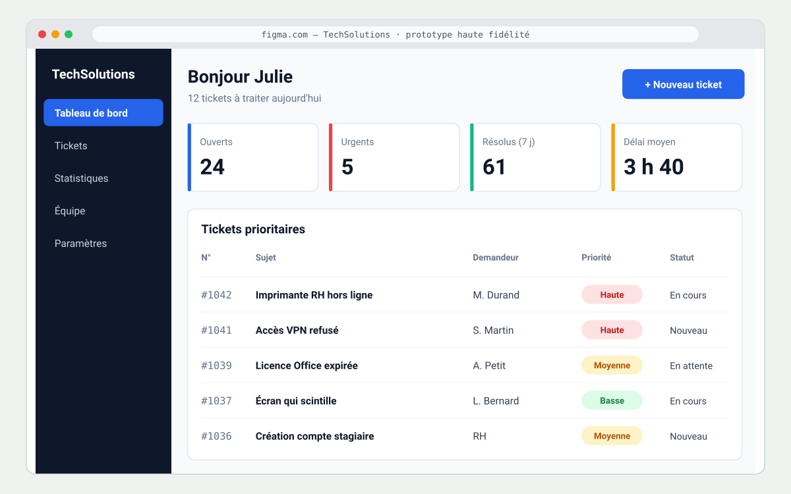
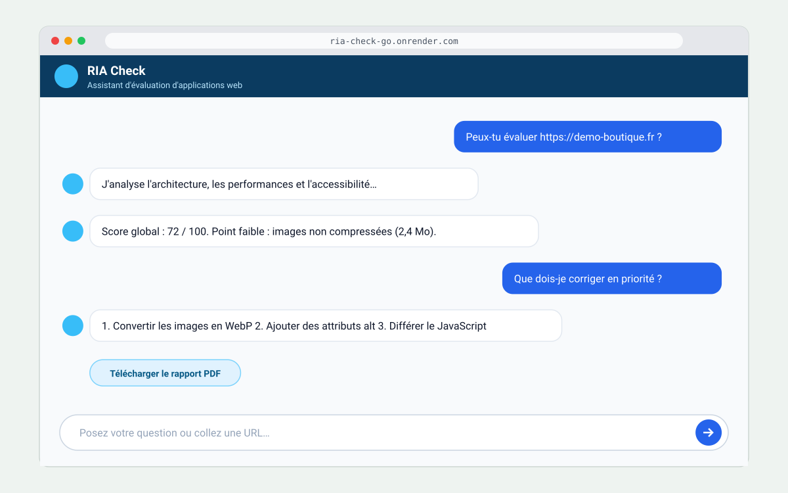
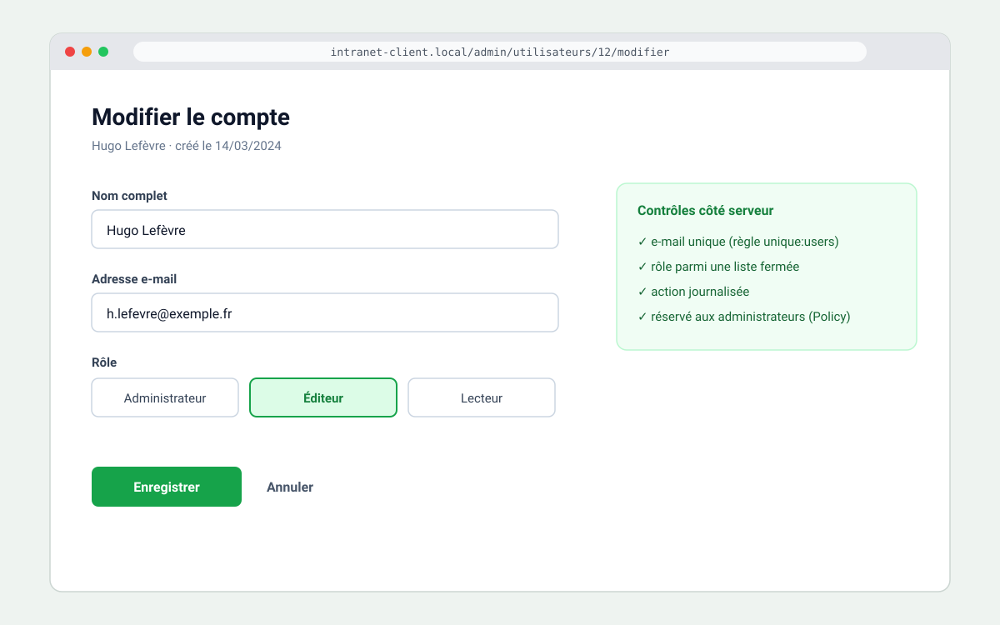

Les matchs référence
Quatre projets choisis parce qu'ils montrent chacun une facette de mon métier : le back-end, la conception centrée utilisateur, l'intégration de l'IA et le travail en équipe professionnelle.

Une API REST pour gérer une collection de citations
Cinq routes RESTful, une validation stricte des données et des réponses d'erreur exploitables par n'importe quel client.
Lire la fiche projet →
Repenser l'outil de tickets d'un service support
Personas, wireframes, design system et prototype interactif pour l'outil de gestion de tickets d'une entreprise de support informatique.
Lire la fiche projet →
Un chatbot qui audite les applications web
Un assistant conversationnel qui analyse une application web (architecture, performances, accessibilité) et génère un rapport de recommandations.
Lire la fiche projet →
Un module de gestion des utilisateurs en Laravel
Développement d'un module d'administration des comptes et optimisation des requêtes SQL d'une application client, en sprints Agile.
Lire la fiche projet →Compétences du référentiel par projet
Correspondance entre les projets et les compétences du BTS SIO option SLAM qu'ils permettent de valider.
| Compétence | API Citations | TechSolutions | Chatbot RIA | Stage Openscop |
|---|---|---|---|---|
| Concevoir et développer une solution applicative | ● | ● | ● | ● |
| Gérer les données | ● | non | non | ● |
| Assurer la maintenance corrective ou évolutive | non | non | non | ● |
| Cybersécurité d'une solution applicative | ● | non | ● | non |
| Travailler en mode projet | non | ● | non | ● |
| Mettre à disposition un service informatique | ● | non | ● | non |
| Organiser son développement professionnel | non | non | ● | non |
| Répondre aux demandes d'assistance | non | ● | non | non |